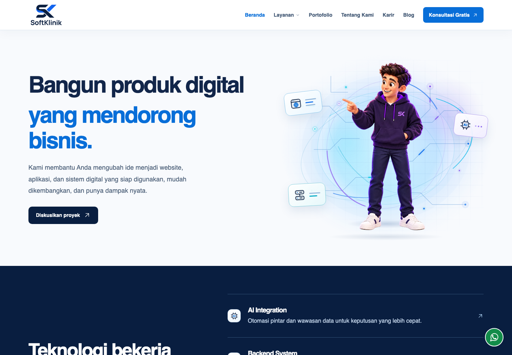

S12022
SARJANA KOMPUTER
S.Kom.
Ilmu Komputer
Universitas Teknologi Yogyakarta
DOSEN TETAP · PENGEMBANG · FOUNDER
Pendidikan dan teknologi,
dalam satu perjalanan.
Dosen tetap di Jinarakkhita Buddhist College of Lampung dan pengembang web/software. Saya membawa latar Ilmu Komputer ke dunia akademik dan pengembangan solusi digital.

01 / PROFIL AKADEMIK
Ilmu Komputer menjadi latar keilmuan saya. Pendidikan, penelitian, dan pengembangan perangkat lunak menjadi ruang untuk menerapkannya.
02 / PENDIDIKAN
Dua jenjang pendidikan.
Satu bidang keilmuan: Ilmu Komputer.
SARJANA KOMPUTER
Ilmu Komputer
MAGISTER KOMPUTER
Ilmu Komputer
03 / PENELITIAN & PUBLIKASI
Pilihan karya ilmiah yang saya tulis bersama rekan penulis, mencakup pembelajaran, literasi digital, dan teknologi pendidikan.
LITERASI DIGITAL & AI
EDUTECH · Artikel jurnal
MINDFULNESS & PEMBELAJARAN
International Journal of Science and Applied Science: Conference Series
PENDIDIKAN AGAMA BUDDHA
International Journal of Science and Applied Science: Conference Series
04 / KARYA & PENGEMBANGAN
Pengembangan web dan software,
di dalam maupun di luar dunia
akademik.
Founder & Technology Lead
Melalui SoftKlinik, saya memimpin pengembangan website, aplikasi, dan sistem digital. Ruang untuk menerjemahkan kebutuhan menjadi solusi teknologi yang dapat digunakan dan dikembangkan.
Kunjungi SoftKlinik
WEBSITE RESMI SOFTKLINIK05 / KONTAK
Untuk diskusi akademik, kolaborasi penelitian,
atau pengembangan web dan software.